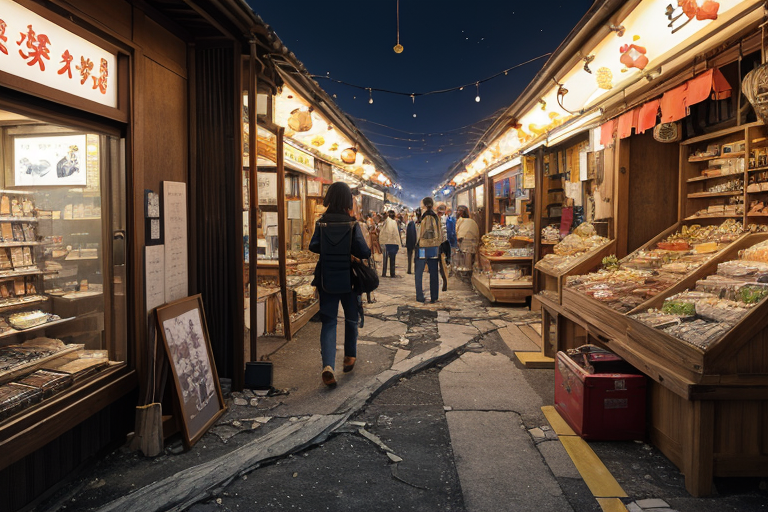
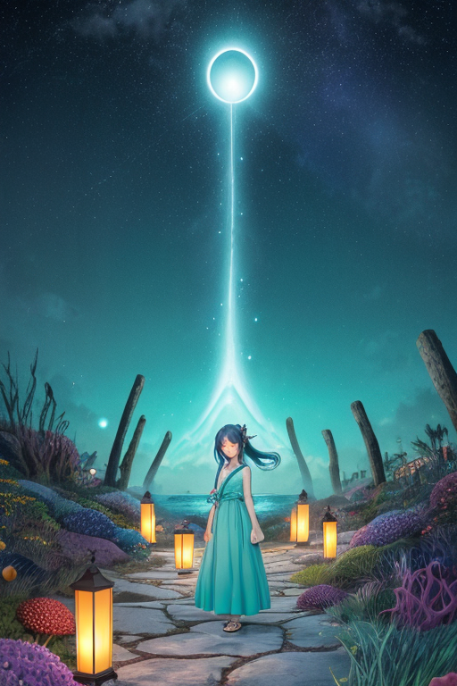
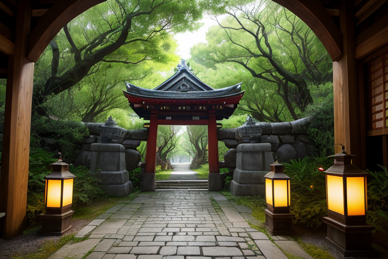
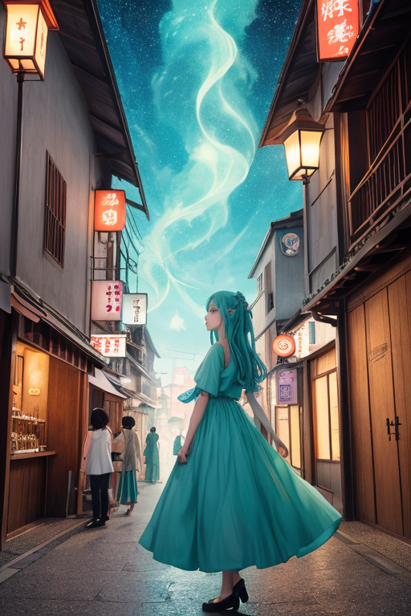
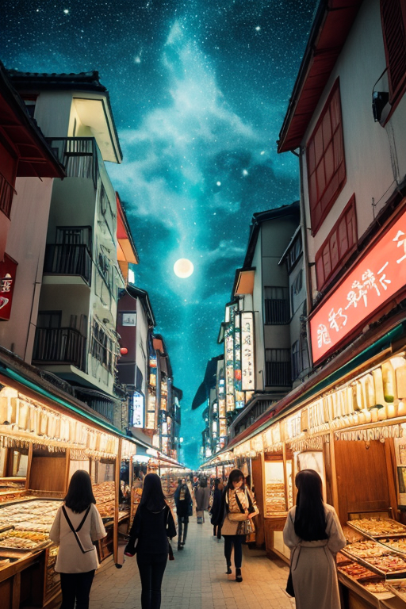

第一章 現実の沖縄
あなたはまだ気づいていない。この土地にも、王がいることを。
国際通りの喧噪は、観光客の欲望と地元の活気が混ざり合う、独特の熱気を帯びていた。土産物店からはちんすこうの甘い香りが漂い、三線の音色が泡盛の笑い声を縫う。ここは商都線、世界線の一つだ。人の流れと金の流れが、この島の現実を形作っている。
その流れの底には、常に微かな歪みが潜む。観光バスの排気が淀む空気、過剰な開発が地盤に与える圧力、忘れられゆく記憶の重み。それらは目に見えない亀裂として、この島の基盤をゆっくりと蝕んでいく。
歪みはやがて現実となる。ほんの少しの地鳴りが、観光客の足を止める。一瞬、喧噪が途切れるその隙間に、深い記憶の哀愁が、通りを優雅に、しかし確かに流れた。それは境界の気配だった。誰も気づかぬうちに、次の揺れは一ランク小さく調整され、崩れかけたショーウィンドウのガラスは、かろうじて持ちこたえる。
あなたは何を受け継ぐ？ この活気そのものか、その下に流れる深い哀愁か。

第二章 歪みの兆候
国際通りの雑踏は、欲望と活気の波だった。観光客が土産物を漁り、泡盛の試飲コーナーには列ができ、三線の音色が金銭のざわめきに溶け込んでいく。しかし、リュウキュリア・エコーには、その喧噪の底を流れる別の「流れ」が見えていた。人々の足取りが、ごくわずか、無意識のうちに東へ、海へと引き寄せられるような、微かな「流れ」だ。それは物理的な傾斜ではなく、記憶の引力による歪みの兆候であった。
主席妖精エコラが、優雅な手振りでその流れを整える。彼女の周りに、目に見えない境界の波紋が広がり、人々の足は再び本来の目的地へと向き直る。しかし、歪みの源は深い。斎場御嶽を聖域とする妖精ウタキナが、異変を告げる。かつての王国の聖域と、今や観光地化されたその場所との「境界」が、歴史の重みで緩み始めているという。受け継がれるべき記憶と、消費される現実。その軋みが、島の基盤をゆっくりと蝕んでいく。

第三章 王の葛藤
斎場御嶽の静寂は、観光客のざわめきに薄く覆われていた。リュウキュリア・エコーは、聖域の入り口に立つ。彼の目には二重の風景が映る。祈りが捧げられた神聖な空間と、ガイドの説明を聞きながら写真を撮る人々の群れ。その「境界」が、歴史の重みと現在の欲望の間に引き裂かれ、微かな亀裂を生じさせている。歪みはここから、島の記憶そのものを揺るがす波となって広がろうとしていた。
「守るべきは、聖域の静寂か、人々の営みか」
王は自問した。感情を持たぬ存在であった頃なら、迷いはなかった。物理的な均衡だけを調整すればよかった。しかし今、彼は「継承」という重みを知ってしまった。三線の音色に込められた哀歓、泡盛に沈む語りべの記憶、御嶽に刻まれた祈りの形。それらすべてが、この島の、消えてはならない「何か」だった。
ウタキナが懸命に境界波を守ろうとする。エコラが、人々の流れを乱さぬよう微調整する。王は碧と紫の紋章を静かに輝かせながら、決断した。守るのは、どちらか一方ではない。聖域の神聖さを保ちつつ、そこに触れようとする人々の「何かを知りたい」という欲望そのものも、この島の生きた記憶の一部なのだと。彼は境界を「遮断」するのではなく、「透過」させる調整を始める。訪れる者一人一人の心に、ほんの少し、かつてここで息づいた祈りの「残響」を届けるように。

第四章 妖精との対話
国際通りの雑踏の奥、路地裏の古びた泡盛酒造場で、エコラは静かに醸造槽に手を触れていた。蒸気がゆらめく。「商いとは、交換だけではないのです」彼女の声は、かすれた三線の音色のようだった。「ここで交わされる金と物。その裏側には、海から得た恵みへの感謝、蒸留する者の技と忍耐、飲む者との縁…すべてが記憶として酒に封じ込められる。歪みとは、この循環が『ただの取引』に矮小化され、記憶が薄れることです」
王は彼女の隣に立ち、店先で土産物を選ぶ観光客の群れを見つめた。「彼らが求めるものは？」
「本物の『一片』でしょう。ちんすこうの甘さ、シーサーの形…それはかつてここにあった王国の、戦火の、復興の記憶の欠片。しかし、あまりに多くが求められ、形だけが一人歩きする。私たちの調整は、商品と記憶の『境界』を曖昧にしすぎず、しかし完全に切り離さないこと。買い手の手に渡る時に、ほんの一瞬、それが何を受け継ごうとしているのかを思い出させる微かな『エコー』を添えるのです」
王はうなずいた。受け継ぐものは、形ある文物だけではない。形にならない営みの連鎖、その重さと優しさそのものを、次の波へと託すこと。

第五章 微調整と余韻
国際通りの雑踏は、常に熱気を帯びていた。観光客の笑い声、土産物店の呼び込み、三線の音色が交じり合うその喧噪の底を、リュウキュリア・エコーは優雅に、そして静かに泳いでいた。彼女の目は、人々の足元、交錯する視線、手に提げられた土産袋の揺れを見つめている。ここでの調整は、ほとんどが偶然の微調整だ。転びそうな老人の足元の小さな段差を、ほんの数ミリ低くする。迷子の子供の視界に、焦った母親の姿が入る角度を調整する。泡盛の瓶が棚から落ちそうになる衝撃を、一瞬遅らせる。
誰も気付かない。気付かせない。それが王の務めだ。
彼女は、ある老夫婦がシーサーの置物を手に取るのを見た。夫が「これ、昔、うちの玄関にもあったな」と呟く。妻が「あら、そうだった？」と笑う。その一瞬、老夫婦の間に流れた、形のない何か。それは紛れもない「継承」の片鱗だった。王はそっと手を振った。老夫婦の背後の混雑がほんの少し緩み、彼らがゆっくりとその記憶をかみしめる、数秒の余白が生まれた。
受け継ぐものは、形ある物だけではない。物を介してよみがえる、温かくて切ない時間。それを次の波へ、そっと押し出すこと。それが、この境界の島に与えられた、優しい調整なのだ。
あなたの町にも、王がいる。